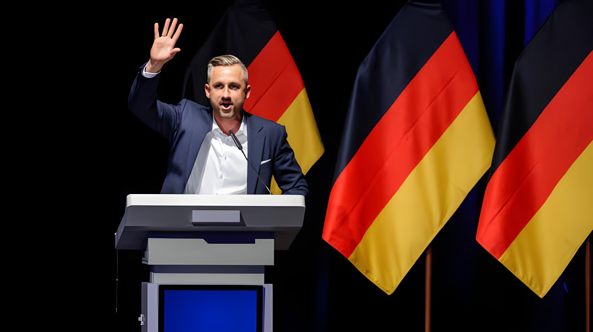

Dimanche 6 septembre 2026, le parti d'extrême droite Alternative für Deutschland (AfD) est arrivé très largement en tête des élections régionales de Saxe-Anhalt, avec environ 44,5 % des voix selon les premières estimations, infligeant un sévère revers au chancelier conservateur Friedrich Merz. Sans disposer, à ce stade, d'une majorité absolue de sièges, le parti dirigé localement par Ulrich Siegmund revendique une victoire « historique » qui pourrait, pour la première fois depuis 1945, ouvrir la voie à la direction d'un Land allemand par l'extrême droite.
Environ 1,7 million d'électeurs étaient appelés aux urnes ce dimanche en Saxe-Anhalt, petit Land de l'est de l'Allemagne, pour renouveler les 83 sièges du Landtag de Magdebourg, où la majorité absolue se situe à 42 sièges. Depuis 2021, la région était dirigée par une coalition dite « Allemagne » réunissant CDU, SPD et FDP autour du ministre-président sortant Sven Schulze, arrivé en tête en 2021 avec 37,1 % des voix, devant une AfD alors créditée de 20,8 %.
Selon les estimations diffusées à la clôture des bureaux de vote, à 18 heures, par les chaînes publiques ARD et ZDF, l'AfD double quasiment son score de 2021 pour s'établir entre 44 et 44,5 % des suffrages, tandis que la CDU s'effondre à 18,5 %, perdant près de vingt points. La participation, elle, a bondi à environ 80 % des inscrits, contre 60,3 % lors du scrutin précédent — un niveau de mobilisation inédit pour une élection régionale dans ce Land.
Élection précédente : CDU 37,1 % (40 sièges), AfD 20,8 % (23 sièges) ; coalition sortante CDU-SPD-FDP sous Sven Schulze.
En Thuringe, l'AfD de Björn Höcke remporte pour la première fois une élection régionale dans l'Allemagne d'après-guerre, sans parvenir à former de gouvernement faute d'alliés.
Aux élections législatives fédérales, l'AfD devient le premier parti d'opposition au Bundestag.
La participation en Saxe-Anhalt dépasse déjà nettement celle de 2021.
À la clôture des bureaux de vote, les estimations ARD et ZDF créditent l'AfD de 44 à 44,5 %, loin devant la CDU (18,5 %).
Ulrich Siegmund revendique la victoire depuis Magdebourg, entouré d'Alice Weidel et Tino Chrupalla, coprésidents du groupe AfD au Bundestag.
Selon les projections des instituts, l'AfD obtiendrait environ 39 sièges sur les 83 que compte le Landtag, un total inférieur au seuil de 42 nécessaire pour gouverner seule. Le résultat définitif dépendra du nombre de partis franchissant la barre des 5 % : outre la CDU, Die Linke (9,5 %), les Verts (9 %) et le SPD (8 %) devraient retrouver un groupe au Landtag, tandis que le FDP, membre de la coalition sortante, serait menacé de sortie du Parlement régional. Le petit parti populiste de gauche BSW, crédité d'environ 5 %, joue lui aussi son entrée dans l'incertitude.
| Acteur | Position |
|---|---|
| Ulrich Siegmund | Revendique une victoire « historique », ambitionne de diriger le Land |
| Sven Schulze | Ministre-président sortant, exclut toute alliance avec l'AfD |
| Friedrich Merz | Chancelier fédéral, sévère revers, position interne fragilisée |
| Alice Weidel & Tino Chrupalla | Coprésidents du groupe AfD au Bundestag, venus célébrer à Magdebourg |
| Die Linke, Verts, SPD | Ouverts à une large coalition anti-AfD autour de Sven Schulze |
| BSW | Seul parti dont les membres restent divisés sur une coopération avec l'AfD |
« Nous avons écrit l'Histoire dans ce pays. »
— Ulrich Siegmund, chef régional de l'AfD, 6 septembre 2026Le scrutin constitue un sévère revers pour le chancelier fédéral Friedrich Merz, dont la CDU perd près de vingt points par rapport à 2021. Peu impliqué dans la campagne locale et déjà confronté à une popularité en berne, le chef du gouvernement pourrait voir sa position contestée au sein de son propre parti. Des renforts policiers avaient été déployés autour du Landtag de Magdebourg dans la journée, par crainte de débordements entre partisans et opposants de l'AfD, au lendemain d'un rassemblement pour la démocratie ayant réuni plusieurs milliers de personnes dans la capitale régionale.
Au-delà du seul Land de Saxe-Anhalt, ce scrutin fonctionne comme un test grandeur nature avant les élections régionales du 20 septembre 2026 à Berlin et en Mecklembourg-Poméranie-occidentale, où l'AfD est elle aussi donnée en tête des sondages. Le précédent de Thuringe, où le parti avait déjà remporté une élection régionale en 2024 sans parvenir à gouverner faute d'alliés, laisse penser qu'un blocage comparable pourrait se reproduire à Magdebourg. Mais l'ampleur du score enregistré ce dimanche, conjuguée à une participation en nette hausse, confirme un ancrage électoral de l'AfD qui dépasse désormais largement les seules régions de l'ex-RDA et place l'ensemble de la classe politique allemande face à une équation inédite : concilier le maintien du cordon sanitaire avec la légitimité démocratique d'un parti désormais en tête des intentions de vote dans plusieurs Länder.
Am Sonntag, den 6. September 2026, ist die rechtsextreme Alternative für Deutschland (AfD) mit rund 44,5 Prozent der Stimmen laut ersten Hochrechnungen mit großem Abstand als stärkste Kraft aus der Landtagswahl in Sachsen-Anhalt hervorgegangen und hat dem konservativen Bundeskanzler Friedrich Merz damit eine schwere Niederlage zugefügt. Ohne bislang über eine absolute Sitzmehrheit zu verfügen, spricht die von Ulrich Siegmund geführte Partei vor Ort von einem „historischen" Sieg, der erstmals seit 1945 den Weg zur Führung eines deutschen Bundeslandes durch die extreme Rechte ebnen könnte.
Rund 1,7 Millionen Wahlberechtigte waren an diesem Sonntag in Sachsen-Anhalt, einem kleinen Bundesland im Osten Deutschlands, aufgerufen, die 83 Sitze des Landtags in Magdeburg neu zu besetzen, wo die absolute Mehrheit bei 42 Sitzen liegt. Seit 2021 wurde die Region von einer sogenannten „Deutschland-Koalition" aus CDU, SPD und FDP unter dem scheidenden Ministerpräsidenten Sven Schulze regiert, der 2021 mit 37,1 Prozent der Stimmen vor einer AfD gesiegt hatte, die damals bei 20,8 Prozent lag.
Laut den um 18 Uhr, zum Schließen der Wahllokale, von ARD und ZDF veröffentlichten Hochrechnungen verdoppelt die AfD ihr Ergebnis von 2021 nahezu und erreicht zwischen 44 und 44,5 Prozent der Stimmen, während die CDU auf 18,5 Prozent einbricht und fast zwanzig Punkte verliert. Die Wahlbeteiligung sprang derweil auf rund 80 Prozent der Wahlberechtigten, gegenüber 60,3 Prozent bei der vorangegangenen Wahl — ein für eine Landtagswahl in diesem Bundesland beispielloses Mobilisierungsniveau.
Vorherige Wahl: CDU 37,1 % (40 Sitze), AfD 20,8 % (23 Sitze); scheidende Koalition CDU-SPD-FDP unter Sven Schulze.
In Thüringen gewinnt die AfD unter Björn Höcke erstmals in der Nachkriegsgeschichte eine Landtagswahl, kann jedoch mangels Bündnispartnern keine Regierung bilden.
Bei der Bundestagswahl wird die AfD stärkste Oppositionskraft im Bundestag.
Die Wahlbeteiligung in Sachsen-Anhalt liegt bereits deutlich über der von 2021.
Beim Schließen der Wahllokale weisen ARD und ZDF der AfD 44 bis 44,5 Prozent zu, weit vor der CDU (18,5 %).
Ulrich Siegmund reklamiert den Sieg von Magdeburg aus, umgeben von Alice Weidel und Tino Chrupalla, den Ko-Vorsitzenden der AfD-Bundestagsfraktion.
Den Prognosen zufolge käme die AfD auf etwa 39 der 83 Landtagssitze — ein Ergebnis unterhalb der für eine Alleinregierung nötigen Schwelle von 42 Sitzen. Das endgültige Ergebnis hängt davon ab, wie viele Parteien die Fünf-Prozent-Hürde überspringen: Neben der CDU dürften Die Linke (9,5 %), die Grünen (9 %) und die SPD (8 %) wieder in den Landtag einziehen, während die FDP, Mitglied der scheidenden Koalition, aus dem Landesparlament zu fliegen droht. Auch das kleine linkspopulistische BSW, das bei rund 5 Prozent liegt, bangt um den Einzug.
| Akteur | Position |
|---|---|
| Ulrich Siegmund | Reklamiert einen „historischen" Sieg, strebt die Führung des Landes an |
| Sven Schulze | Scheidender Ministerpräsident, schließt jedes Bündnis mit der AfD aus |
| Friedrich Merz | Bundeskanzler, schwere Niederlage, innerparteilich geschwächte Position |
| Alice Weidel & Tino Chrupalla | Ko-Vorsitzende der AfD-Bundestagsfraktion, feiern in Magdeburg mit |
| Linke, Grüne, SPD | Offen für ein breites Anti-AfD-Bündnis um Sven Schulze |
| BSW | Einzige Partei, deren Mitglieder bei einer Kooperation mit der AfD gespalten sind |
„Wir haben Geschichte geschrieben in diesem Land."
— Ulrich Siegmund, AfD-Landesvorsitzender, 6. September 2026Das Wahlergebnis ist ein schwerer Rückschlag für Bundeskanzler Friedrich Merz, dessen CDU gegenüber 2021 fast zwanzig Punkte verliert. Der wenig in den lokalen Wahlkampf involvierte Regierungschef, dessen Popularität ohnehin schwächelt, könnte nun innerhalb der eigenen Partei angefochten werden. Rund um den Magdeburger Landtag waren tagsüber verstärkt Polizeikräfte im Einsatz, aus Sorge vor Zusammenstößen zwischen AfD-Anhängern und -Gegnern, einen Tag nach einer Demokratie-Kundgebung, die mehrere Tausend Menschen in der Landeshauptstadt versammelt hatte.
Über Sachsen-Anhalt hinaus fungiert diese Wahl als Testlauf vor den Landtagswahlen am 20. September 2026 in Berlin und Mecklenburg-Vorpommern, wo die AfD ebenfalls in Umfragen vorn liegt. Der Präzedenzfall Thüringen, wo die Partei bereits 2024 eine Landtagswahl gewann, mangels Bündnispartnern aber nicht regieren konnte, lässt eine ähnliche Blockade auch in Magdeburg möglich erscheinen. Doch das Ausmaß des diesmaligen Ergebnisses, verbunden mit einer deutlich gestiegenen Wahlbeteiligung, bestätigt eine Verankerung der AfD, die längst über die Regionen der ehemaligen DDR hinausreicht — und stellt die gesamte deutsche Politik vor eine neue Gleichung: die Aufrechterhaltung der Brandmauer mit der demokratischen Legitimität einer Partei zu vereinbaren, die in mehreren Bundesländern inzwischen in Führung liegt.